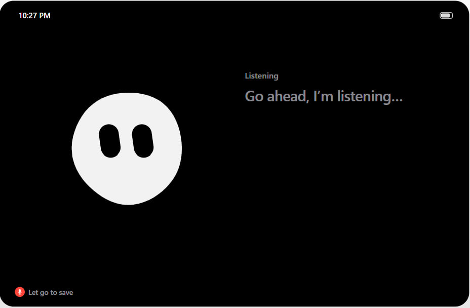
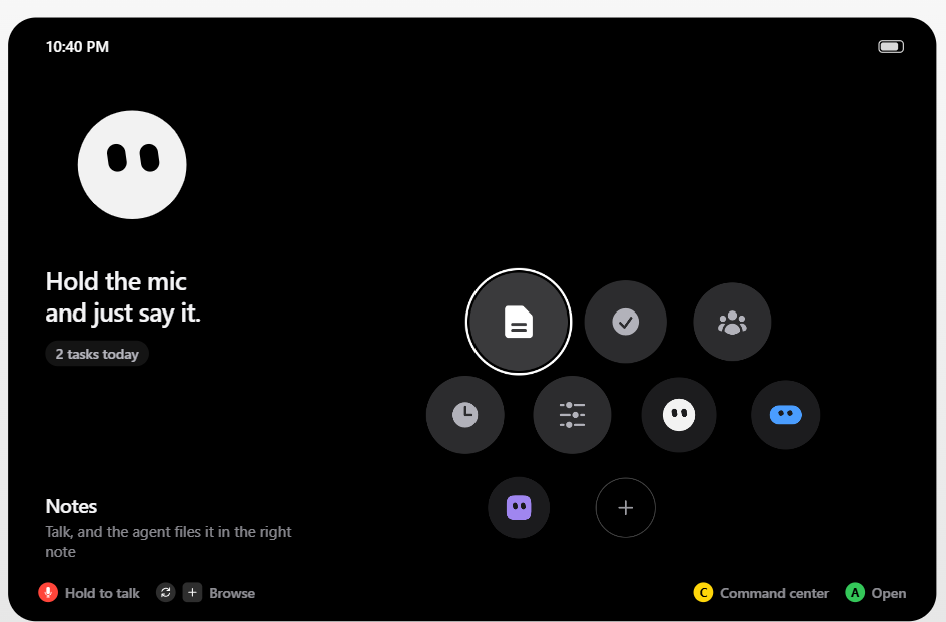
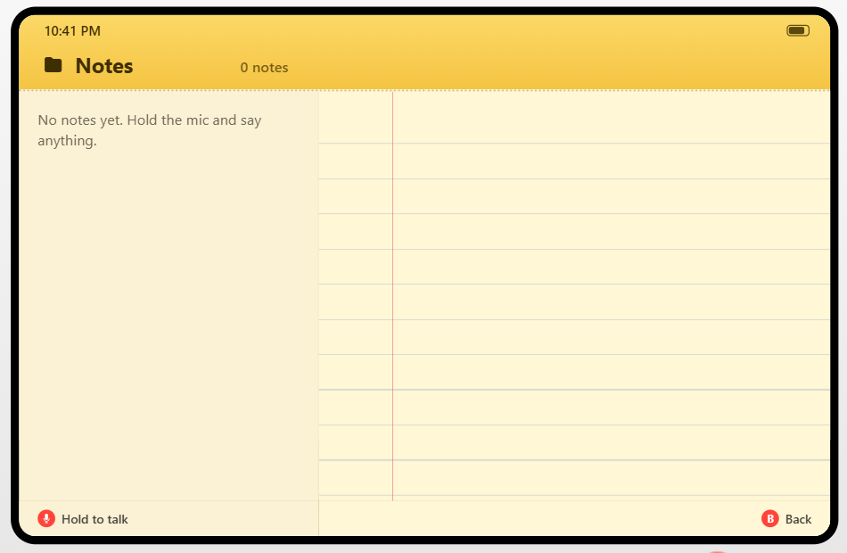
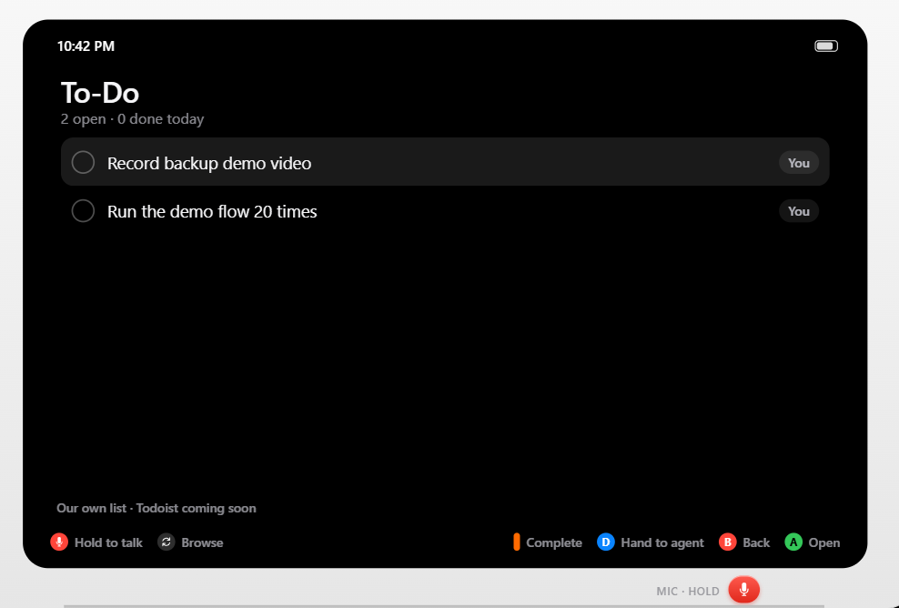
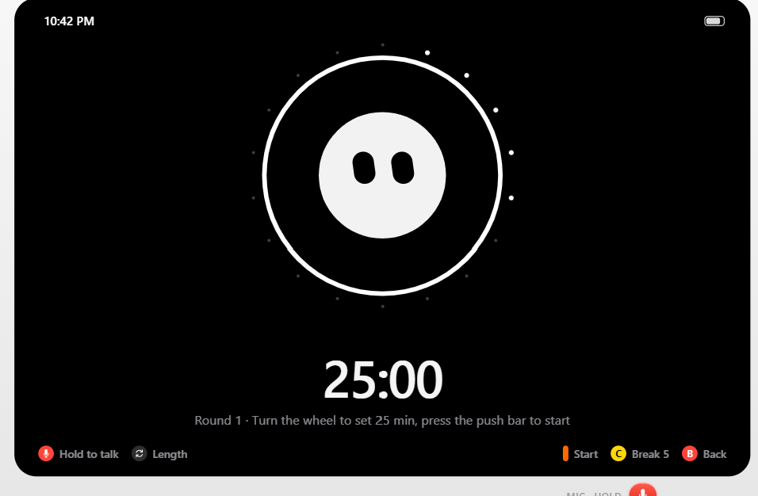
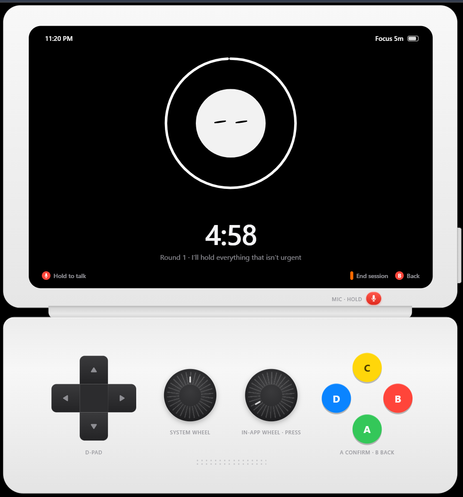

LISTENING
Hey, Omni. Ready for some work?Live transcript
A saved voice note becomes a finance tracker, a clear plan, and five minutes of focus. The story begins inside the screen. The hardware reveal comes when the person takes control.

What’s the task today?


Hey, Omni, I have some ideas to share. What if I could build an app to manage my money? I want to understand my spending and save for what matters.
What if I could build an app to manage my money?
| Category | Budget | Actual |
|---|---|---|
| Home | 800 | 760 |
| Food | 250 | 218 |
| Savings | 200 | 200 |
“…save for what matters.”



Working together · Connected to your computer
Storyboard concept using your supplied screen references. Coloured specialist agents, spreadsheet work, speech replies, and the folding pose describe the intended film. The current screenshots establish the visual style; they do not verify those new behaviours. The Device housing is a simulated design.